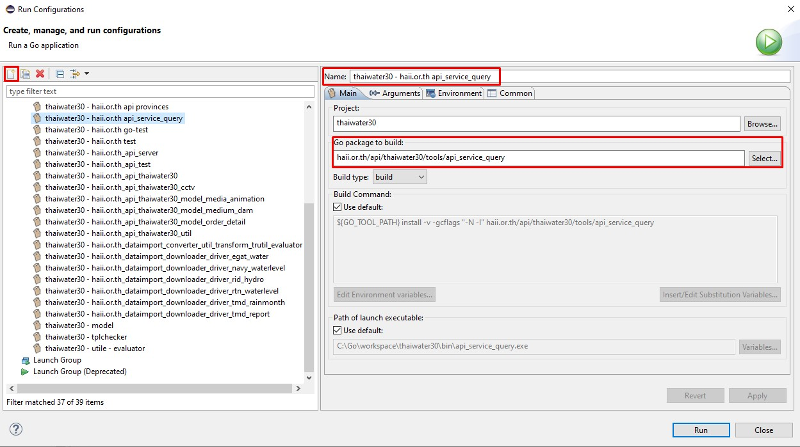
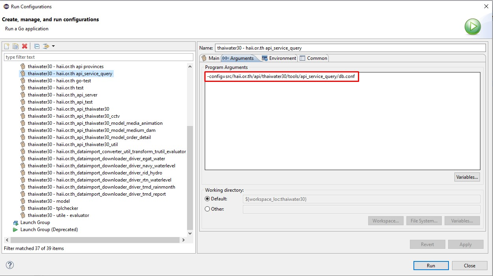
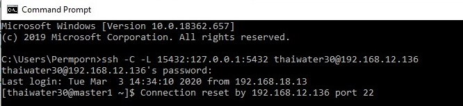
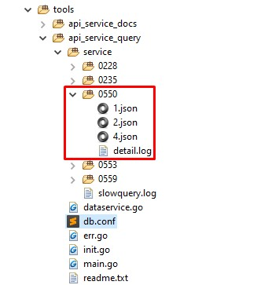

โฟล์เดอร์หลักจะอยู่ใน
/thaiwater30/src/haii.or.th/api/thaiwater30/tools/api_service_query
ไฟล์เริ่มต้น main.go ทำการเปลี่ยน metadata id ดังโค้ดด้านล่างจะทำการทดสอบ metadata id 550
// thaiwater30/src/haii.or.th/api/thaiwater30/tools/api_service_query/main.go
package main
import ()
func main() {
initDB()
var service_id int64 = 550// metadata id
testDataserviceById(service_id)
}
เพิ่ม run configurations ดังนี้


shh connect database

เมื่อกด run configurations ที่เพิ่มไว้ โค้ดจะ gen โฟล์เดอร์ชื่อตาม metadata id เช่น ตัวอย่างที่รันเป็น 550 ในโฟล์เดอร์จะมี ไฟล์ detail.log เป็น sql และไฟล์ .json เป็นข้อมูลที่ได้จาก query sql

ตัวอย่างไฟล์ .json ที่ได้
[
{
"agency_id": 12,
"amphoe_name": null,
"hydro_id": 8,
"id": 2559,
"offset": null,
"province_name": null,
"qmax": 204,
"riverbank": 8.2,
"station_type_msl": 1,
"tele_station_lat": "6.022610",
"tele_station_long": "101.974892",
"tele_station_name": {
"th": "บริเวณสะพานลันตู"
},
"tele_station_oldcode": "X.119A",
"tele_station_type": "W",
"tumbon_name": null
},
{
"agency_id": 12,
"amphoe_name": {
"th": "มะนัง"
},
"hydro_id": 8,
"id": 2561,
"offset": null,
"province_name": {
"th": "สตูล"
},
"qmax": 265,
"riverbank": 12.8,
"station_type_msl": 1,
"tele_station_lat": "6.940820",
"tele_station_long": "99.872917",
"tele_station_name": {
"th": "บ้านวังพระเคียน"
},
"tele_station_oldcode": "X.150",
"tele_station_type": "W",
"tumbon_name": {
"th": "นิคมพัฒนา"
}
},
]
ตัวอย่างไฟล์ detail.log
Service id : 1
Query : SELECT tt.id, tt.agency_id , tt.tele_station_name , tt.tele_station_type , tt.tele_station_lat , tt.tele_station_long , lg.province_name, lg.amphoe_name, lg.tumbon_name, tt.tele_station_oldcode , tt.riverbank , tt.station_type_msl , tt.hydro_id , tt.offset , tt.qmax FROM m_tele_station tt LEFT JOIN lt_geocode lg ON tt.geocode_id = lg.id LEFT JOIN subbasin s ON tt.subbasin_id = s.id WHERE tt.agency_id = '12' AND tt.deleted_at = to_timestamp(0) AND hydro_id IS NOT NULL ORDER BY tt.id
Param : []
(0.01995 sec)
rows 286
================================
Service id : 2
Query : SELECT tt.id, tt.agency_id , tt.tele_station_name , tt.tele_station_type , tt.tele_station_lat , tt.tele_station_long , lg.province_name, lg.amphoe_name, lg.tumbon_name, tt.tele_station_oldcode , tt.riverbank , tt.station_type_msl , tt.hydro_id , tt.offset , tt.qmax FROM m_tele_station tt LEFT JOIN lt_geocode lg ON tt.geocode_id = lg.id LEFT JOIN subbasin s ON tt.subbasin_id = s.id WHERE tt.agency_id = '12' AND tt.deleted_at = to_timestamp(0) AND hydro_id IS NOT NULL ORDER BY tt.id
Param : []
(0.00705 sec)
rows 286
================================
Service id : 4
Query : SELECT tt.id, tt.agency_id , tt.tele_station_name , tt.tele_station_type , tt.tele_station_lat , tt.tele_station_long , lg.province_name, lg.amphoe_name, lg.tumbon_name, tt.tele_station_oldcode , tt.riverbank , tt.station_type_msl , tt.hydro_id , tt.offset , tt.qmax FROM m_tele_station tt LEFT JOIN lt_geocode lg ON tt.geocode_id = lg.id LEFT JOIN subbasin s ON tt.subbasin_id = s.id WHERE tt.agency_id = '12' AND tt.deleted_at = to_timestamp(0) AND hydro_id IS NOT NULL ORDER BY tt.id
Param : []
(0.00573 sec)
rows 286